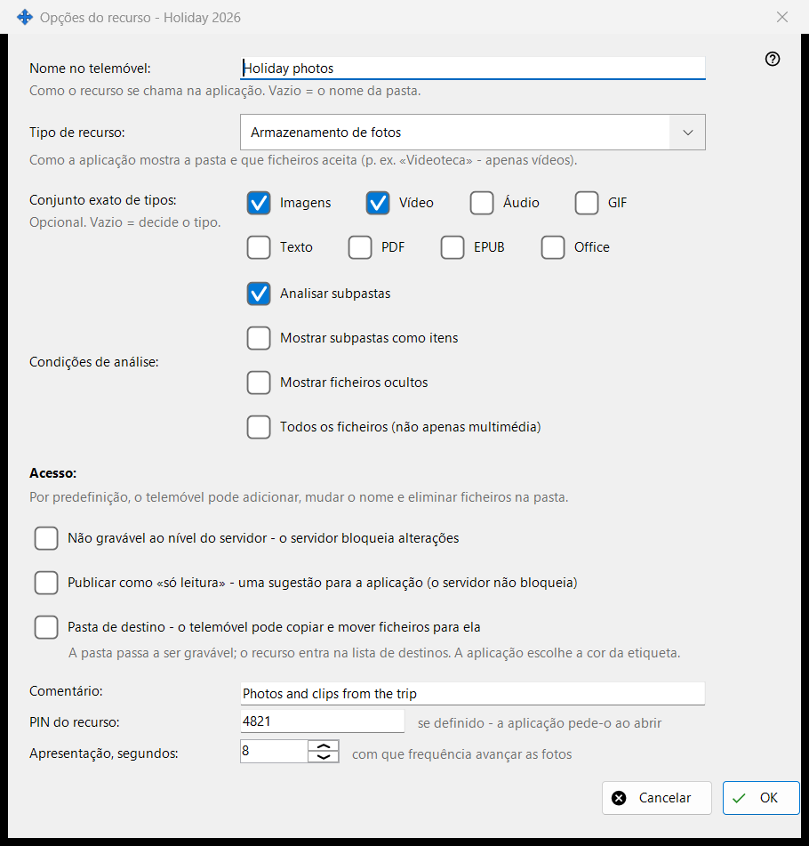
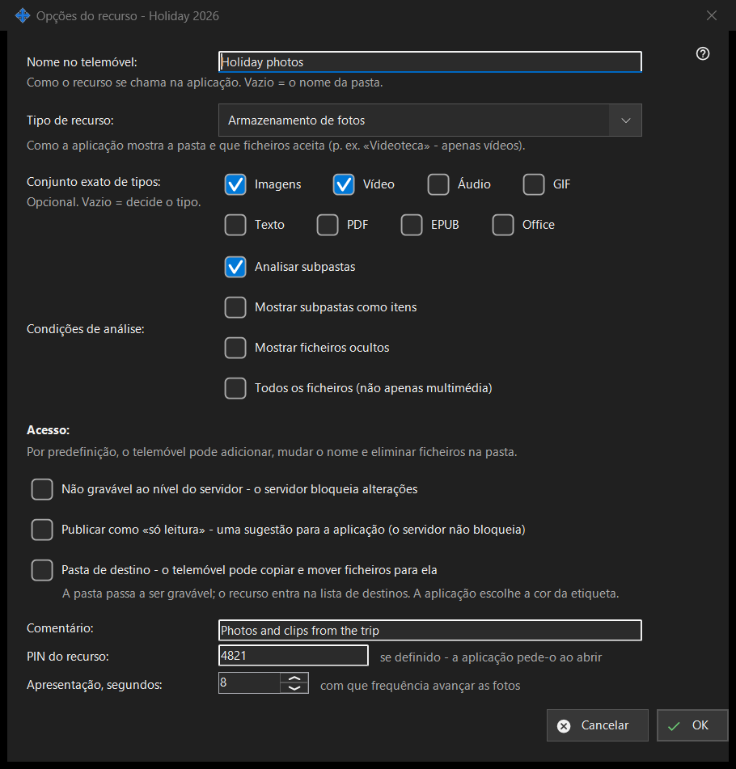

Opções do recurso
Finalidade
Opções de uma pasta partilhada: o seu nome no telemóvel, o tipo, que ficheiros são mostrados, quem os pode alterar e alguns extras. Abre-se a partir de «Editar» na janela principal, de uma linha de pasta e do assistente de recursos. O título real da janela termina com o nome da pasta.


Nesta ordem
- Defina o nome que o telemóvel vai mostrar.
- Escolha o tipo de recurso ou um conjunto exato de multimédia.
- Defina as condições de análise.
- Escolha o acesso.
- Abra «Opções avançadas» para um comentário, um PIN e o intervalo da apresentação.
- Prima OK.
Os elementos
Nome e tipo
«Nome no telemóvel:» é o nome com que a pasta aparece na aplicação; vazio significa o nome da pasta. «Tipo de recurso:» oferece Pasta normal, Biblioteca de áudio, Videoteca, Armazenamento de fotos e Documentos. «Conjunto exato de tipos:» escolhe os tipos exatos (Imagens, Vídeo, Áudio, Texto, Todos os ficheiros); vazio significa que o tipo decide.
Condições de análise
«Analisar subpastas», «Mostrar subpastas como itens», «Mostrar ficheiros ocultos» e «Todos os ficheiros (não apenas multimédia)».
Acesso
Por predefinição, o telemóvel pode adicionar, mudar o nome e eliminar ficheiros na pasta. «Só leitura» é um bloqueio real: o servidor recusa as alterações. Uma sugestão de só leitura apenas diz à aplicação para esconder os botões de edição; o servidor não bloqueia nada. Uma pasta de destino pode receber cópias e movimentações a partir do telemóvel; passa a admitir escrita e entra na lista de destinatários, e a sua cor é escolhida pela aplicação.
Opções avançadas
Um comentário (opcional), um PIN para o recurso (a aplicação pede-o quando o recurso é aberto) e o intervalo da apresentação em segundos. As definições são enviadas ao servidor quando confirma.
Definições do gestor · Definições de partilha SFTP · Definições do servidor de troca